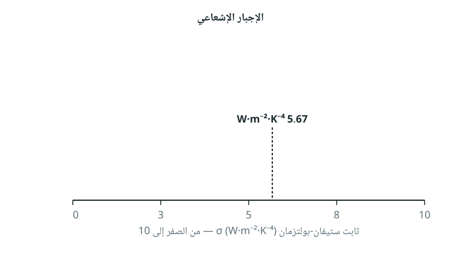

الإجبار الإشعاعي
Radiative forcing
الإجبار الإشعاعي RF هو التغير في توازن الطاقة الإشعاعية للأرض عند قمة الغلاف الجوي بسبب عامل خارجي، بوحدة W/m². القيمة الموجبة تعني تسخيناً والقيمة السالبة تبريداً، ويُستعمل لمقارنة أثر العوامل المناخية.
الأرض تتوازن حرارياً بين الطاقة الشمسية الداخلة والإشعاع الحراري الخارج. وأي تغير في هذا التوازن — زيادة غاز دفيء أو تغير في الإشعاع الشمسي — يُقاس بالإجبار الإشعاعي. مثال: مضاعفة ثاني أكسيد الكربون تعطي إجباراً إشعاعياً نحو +3.7 W/m². ولمقارنة، التغير في الإشعاع الشمسي منذ 1750 يُقدّر بنحو +0.05 W/m² فقط. ولهذا يُقاس أثر العوامل بمقارنة إجباراتها لا بأسمائها.
كيف تعمل الظاهرة؟
الأرض تمتص الإشعاع الشمسي قصير الموجة وتصدر إشعاعاً طويل الموجة. والغازات الدفيئة تمتص جزءاً من الإشعاع الطويل الصادر وتعيد إصداره في كل الاتجاهات، فيقلّ التدفق الخارج إلى الفضاء. وهذا الخلل في التوازن هو الإجبار الإشعاعي. ويزداد الأثر مع تركيز الغاز لوغاريتمياً لا خطياً، لأن نطاقات الامتصاص القوية تصبح مشبعة أولاً.
العلاقة بالأرقام
RF = 5.35·ln(C/C₀) W/m² لثاني أكسيد الكربون. مثال: من 280 إلى 560 ppm: RF = 5.35×ln(2) = 5.35×0.693 = 3.71 W/m². وΔT = λ·RF. وثابت ستيفان-بولتزمان σ = 5.670×10⁻⁸ W/(m²·K⁴) يحدد الإشعاع الحراري لجسم أسود: عند 288 K يكون 5.670×10⁻⁸×288⁴ = 390 W/m².
مفاهيم متقاربة
يُفرَّق بين الإجبار الإشعاعي والتغذية الراجعة: الأول عامل خارجي والثانية استجابة داخلية. ويُفرَّق بين الإجبار اللحظي والمعدّل. ويُفرَّق بين الإجبار الإشعاعي والحساسية المناخية: الأولى W/m² والثانية K/(W/m²). وأخيراً يُفرَّد بين الإجبار الإشعاعي لغاز دفيء والإجبار المباشر للهباء الجوي، حيث الثاني قد يكون سالباً.
حدود التطبيق
الإجبار الإشعاعي مقياس مقارن لا تنبؤ مباشر بالحرارة، لأن التغذيات الراجعة تحدد النتيجة. ولا يصف التوزيع المكاني للتغير، بل المتوسط العالمي. ولا يشمل التغذيات الراجعة البطيئة كذوبان الجليد. وأخيراً لا يصف التغيرات السريعة كالانفجارات البركانية، حيث يزول الأثر في سنوات.

| الكمية | القيمة | المصدر |
|---|---|---|
| ثابت ستيفان-بولتزمان σ | 5.670 374 419×10⁻⁸ W·m⁻²·K⁻⁴ | [1] |
المصادر
- 1 CODATA Value: Stefan-Boltzmann constant — NIST — CODATA 2022 recommended values (2024). physics.nist.gov/cgi-bin/cuu/Value?sigma · اطُّلع عليه 2026-11-22
- 2 CODATA Value: Boltzmann constant — NIST — CODATA 2022 recommended values (2024). physics.nist.gov/cgi-bin/cuu/Value?k · اطُّلع عليه 2026-11-22
- 3 CODATA Value: speed of light in vacuum — NIST — CODATA 2022 recommended values (2024). physics.nist.gov/cgi-bin/cuu/Value?c · اطُّلع عليه 2026-11-22
استشهد بهذا المصطلح
الصيغتان مبنيتان من بيانات الصفحة نفسها: العنوان والتاريخ ورابط النسخة المنشورة.
الإجبار الإشعاعي — Radiative forcing. (2026). ديوان المعرفة — انفراد. https://infiradev.com/diwan/terms/term-radiative-forcing.html
@misc{term-radiative-forcing2026,
title = {الإجبار الإشعاعي},
titleaddon = {Radiative forcing},
howpublished = {{ديوان المعرفة — انفراد} — مرجع علمي عربي},
year = {2026},
url = {https://infiradev.com/diwan/terms/term-radiative-forcing.html},
urldate = {2026-11-26},
note = {مراجعة علمية: hermes (مراجعة معتمدة 2026-11-26)}
}
راجعه: hermes (مراجعة معتمدة 2026-11-26) · 2026-11-26 · آخر تحديث 2026-11-22